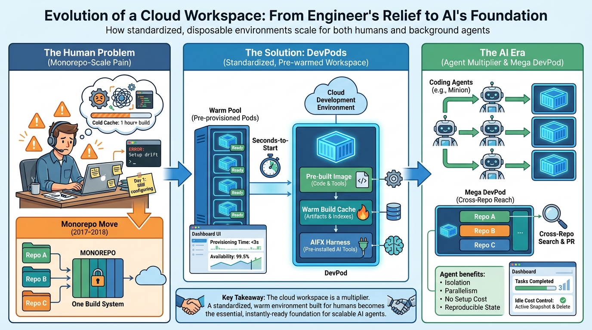

Part I — FOUNDATIONS: The Decade Before AI
DevPods: Cloud Workspaces Built for Engineers, Ready for Agents

Image generated by Google Gemini (gemini-3-pro-image-preview)
Part I — FOUNDATIONS: The Decade Before AI

Image generated by Google Gemini (gemini-3-pro-image-preview)